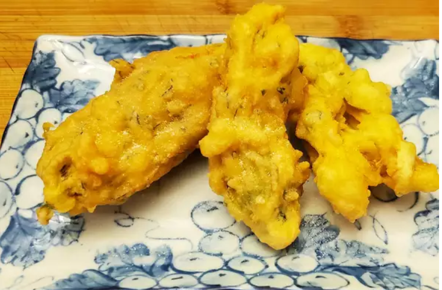

Crispy Zucchini/Pumpkin Blossoms

Ingredients
- 2/3 cup all-purpose flour
- 1 teaspoon baking powder
- 3 leaves fresh basil, minced
- 2 tablespoons finely grated Parmesan cheese
- 2 tablespoons cold water
- 2 eggs, beaten
- 3 cups oil for frying
- 12 pumpkin or zucchini blossoms
Directions
-
In a medium bowl, stir together the flour, baking powder, basil and
Parmesan cheese. Mix in water and eggs until smooth.
-
Heat 1/2 inch of oil in a large heavy skillet over medium-high heat. When
the oil is hot, dip blossoms in the batter to coat, and gently place a few
at a time into the hot oil. Fry on each side until crisp and golden. Drain on
paper towels.
Go back to main page